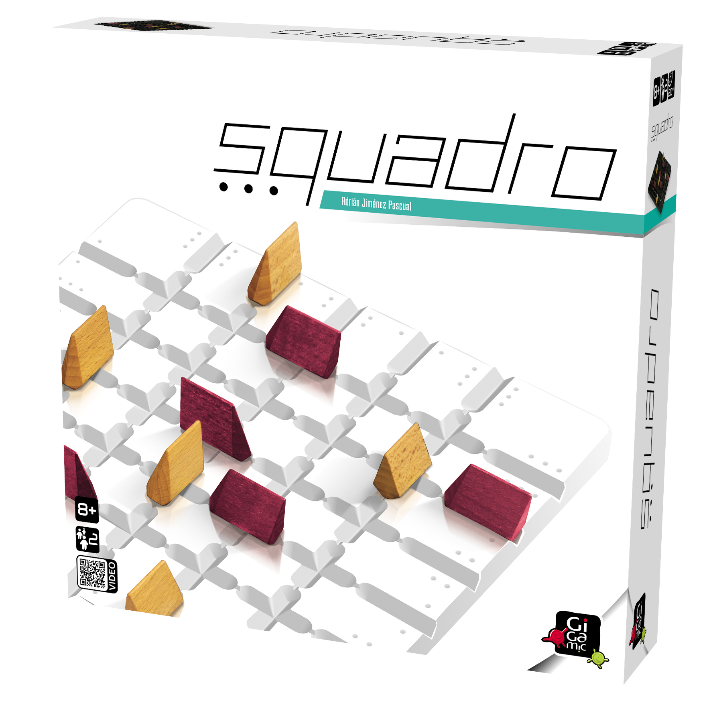
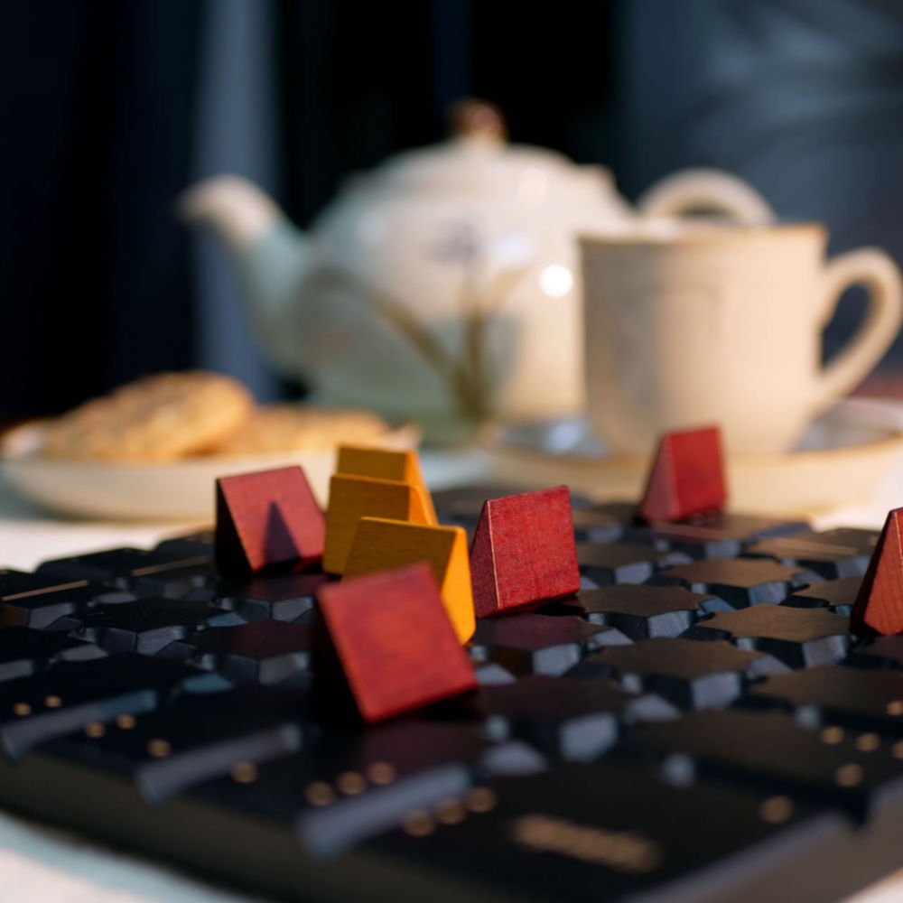
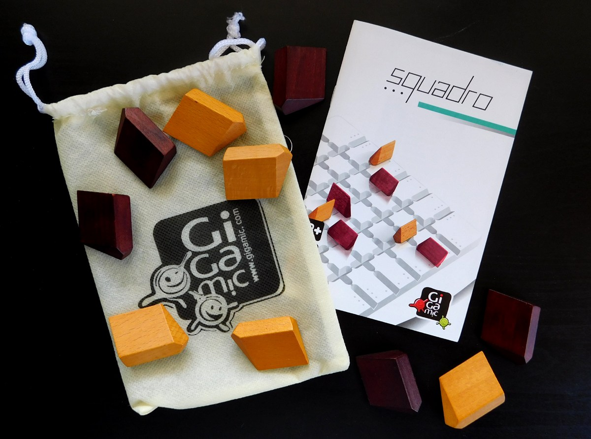

Origin: March 2015.
Squadro (originally "Azi") is a game I came up with during a stay in China, in March 2015. The idea behind it was to see what would be the result of trying to create a board game if I were to be the first human ever to invent a board game. The game confronts two players (teams) on a square grid. The standard game is played on an 5×5 grid, although it can be played on any arbitrary size without its rules changing.Origen: Marzo de 2015.
Squadro (originalmente "Azi") es un juego que se me ocurrió durante una estancia en China, en marzo de 2015. La idea detrás de ello fue ver cuál sería el resultado de intentar crear un juego de mesa si yo fuese el primer humano de la historia en inventar un juego de mesa. El juego enfrenta a dos rivales (equipos) en un tablero cuadrado. El juego estándar se juega en un tablero 5x5, pero se puede jugar en cualquier tamaño arbitrario sin que sus reglas cambien.由来：2015年3月．
Squadro（読み：スクアドロ．もともと「Azi」）は中国での滞在中に思いついたゲームです．基本のアイディアは「もしも私は史上初のボードゲームを設計する人であれば，どんなゲームを思いつくでしょう」という考え．盤を用いる二人対戦のゲームです．標準ゲームは5x5の盤でやりますが，ルールを変えずに任意のサイズで遊べるゲームです．Origen: Marzo de 2015.
Squadro (originalmente "Azi") es un juego que se me ocurrió durante una estancia en China, en marzo de 2015. La idea detrás de ello fue ver cuál sería el resultado de intentar crear un juego de mesa si yo fuese el primer humano de la historia en inventar un juego de mesa. El juego enfrenta a dos rivales (equipos) en un tablero cuadrado. El juego estándar se juega en un tablero 5x5, pero se puede jugar en cualquier tamaño arbitrario sin que sus reglas cambien.Play-test: 2015 - 2017.
During this period I play-tested the game with friends, family and, mostly, colleagues at the univerisity. This helped me tune the rules and design of the game. I am specially thankful to Yumehito Kawashima, who became my greatest and fiercest opponent, and who played with me just for fun on a daily basis.
After long time playing the game and receiving a lot of support from everybody who tried it, I decided to contact some game companies looking for a publishing partner.Pruebas: 2015 - 2017.
Durante este periodo probé el juego con amigos, familia y, sobre todo, compañeros de la universidad. Esto me ayudó a ajustar las reglas y el diseño del juego. Estoy especialmente agradecido a Yumehito Kawashima, quien fue mi mayor rival y quien jugó conmigo a diario sólo por diversión.
Tras jugar durante bastate tiempo al juego y recibir mucho apoyo de todas las personas que lo probaron decidí contactar con empresas para tratar de buscar un socio que estuviese interesado en publicar mi juego.試用期間：2015 - 2017．
この期間の間友達と家族と主に大学の仲間と一緒に遊んでいました．皆さんと一緒に詰めた経験やいただいた感想のおかげでゲームのデザインやルールが固定できました．特に毎日楽しく遊んでいただいた院生仲間の川島夢人さんに感謝をしています．
長い間ゲームをやっていて，遊んでいただいた皆さんから良い評価をいただいたので出版社に連絡することを決意しました．Pruebas: 2015 - 2017.
Durante este periodo probé el juego con amigos, familia y, sobre todo, compañeros de la universidad. Esto me ayudó a ajustar las reglas y el diseño del juego. Estoy especialmente agradecido a Yumehito Kawashima, quien fue mi mayor rival y quien jugó conmigo a diario sólo por diversión.
Tras jugar durante bastate tiempo al juego y recibir mucho apoyo de todas las personas que lo probaron decidí contactar con empresas para tratar de buscar un socio que estuviese interesado en publicar mi juego.Publishing: October 2018.
I signed a contract with GIGAMIC in May 2017, and after some further tuning of the rules of the game and some changes in design and name, the game was ready to be published in October 2018.Publicación: Octubre de 2018.
En mayo de 2017 firmé un contrato con GIGAMIC, y tras algunos ajustes más de las reglas y algunos cambios en nombre y diseño el juego estaba listo para publicarse en octubre de 2018.出版：2018年10月．
2017年5月にGIGAMICと契約を結び，協力的にゲームの名前・見た目・ルールの調整を行い，2018年10月にゲームが公開されることが決まりました．Publicación: Octubre de 2018.
En mayo de 2017 firmé un contrato con GIGAMIC, y tras algunos ajustes más de las reglas y algunos cambios en nombre y diseño el juego estaba listo para publicarse en octubre de 2018.
In video: (
") )
)En vídeo: (
)ビデオ： (
)In video: (
)In few words:
Both players start with their pieces in troughs on their side of the game board, with players sitting perpendicular to one another. When you move a piece, you move it a distance based on the strength indicated in the trough that you're leaving. Once the piece has made its way across the board, you move it back based on the strength on the other side. If you pass over an opposing piece while moving, then that opposing piece must return to its last departing base and your moving piece advances one cell further than where the opposing piece was.
The first player to make a return trip with all pieces but one wins.En pocas palabras:
Cada jugador comienza con sus piezas alineadas en las casillas de salida, estando los jugadores sentados perpendicularmente. Cuando mueves una pieza avanzas tantas casillas como la fuerza indicada en la base de la casilla inicial. Cuando tu pieza llega al final del tablero se le da la vuelta y regresa con la fuerza indicada en la nueva casilla de salida. Si pasas por encima de alguna pieza rival en tu camino, esa pieza deberá volver a su última casilla de salida y tu pieza avanza una casilla más allá de donde estaba el rival.
El primer jugador en hacer un viaje de ida y vuelta con todas sus piezas menos una gana.大雑把に：
各競技者は自分の駒を行に並べ，相手と直行的に座る．各駒がその下に書いてある力だけ進む．駒が自分が動いている列の奥に着いたら，向きを変えて新しい出発地に書いてある力で帰る．移動の途中で相手の駒に逢った場合相手の駒が最後の出発地に戻り，自分の駒が逢ったマスより一歩進む．
一駒を除いて全駒を先に初期位置に戻せた人が勝利．En pocas palabras:
Cada jugador comienza con sus cinco piezas alineadas en las casillas de salida, estando los jugadores sentados perpendicularmente. Cuando mueves una pieza avanzas tantas casillas como la fuerza indicada en la base de la casilla inicial. Cuando tu pieza llega al final del tablero se le da la vuelta y regresa con la fuerza indicada en la nueva casilla de salida. Si pasas por encima de alguna pieza rival en tu camino, esa pieza deberá volver a su última casilla de salida y tu pieza avanza una casilla más allá de donde estaba el rival.
El primer jugador en hacer un viaje de ida y vuelta con cuatro de las cinco piezas ganas.In detail: En detalle: 詳細に： En detalle:
- Pieces only move vertically (in their own column).
- Las piezas sólo mueven verticalmente (en su propia columna).
- 駒が縦にしか動かない（自分の列の中）．
- Las piezas sólo mueven verticalmente (en su propia columna).
- Pieces advance as much as the value under their starting cell indicates.
- Las piezas avanzan tanto como el valor indicado en su casilla de salida.
- 駒が出発地に書いてある値だけ進む．
- Las piezas avanzan tanto como el valor indicado en su casilla de salida.
- When a piece reaches its last row, the piece turns around. The new value for the piece to advance is the one written under the new starting cell.
- Cuando una pieza llega a la última fila se le da la vuelta. El nuevo valor de avance es el marcado en la nueva casilla de salida.
- 駒が列の奥に着いた時，駒を反対向きにし新しい出発地に書いてある値で帰る．
- Cuando una pieza llega a la última fila se le da la vuelta. El nuevo valor de avance es el marcado en la nueva casilla de salida.
- If a player performs a move and there is an opponent's piece in the way:
- Si un jugador mueve y hay una pieza rival en su camino:
- 移動の途中で相手の駒に逢った場合：
- Si un jugador mueve y hay una pieza rival en su camino:
- The piece in turn moves to one cell further than where the opponent's piece was.
- La pieza en turno mueve una casilla más allá de donde estaba la pieza rival.
- 移動中の駒が逢った所より一歩進む．
- La pieza en turno mueve una casilla más allá de donde estaba la pieza rival.
- The opponent's piece moves back to its last starting cell.
- La pieza rival vuelve a su última casilla de salida.
- 相手の駒が自分の最後の出発地に戻る．
- La pieza rival vuelve a su última casilla de salida.
- If there is yet another opponent's piece in the new cell, repeat from step 1.
- Si hay otra pieza rival en la nueva posición, repetir desde el paso 1.
- もし着いたマスにもう一駒があれば，ステップ1からやり直す．
- Si hay otra pieza rival en la nueva posición, repetir desde el paso 1.
- When a piece gets back to the row where it started the game the piece ends its game. It should be removed from the board.
- Cuando una pieza regresa a la casilla de la que partió acaba su carrera. Se retira del tablero.
- 駒が自分の初期位置に戻って来たらその駒の競技が終わる．ボードから駒を除く．
- Cuando una pieza regresa a la casilla de la que partió acaba su carrera. Deberá ser dejada en la fila sin ser dada la vuelta.
- When all pieces but one finish their race, the player in turn wins the game. The game is over.
- Cuando todas las piezas menos una conclyen su carrera el jugador en turno gana. La partida ha acabado.
- 一駒を除いて全駒が往復旅行を完成したら勝利になる．対戦終了．
- Cuando todas las piezas menos una llegan a la fila de inicio el jugador en turno gana. La partida ha acabado.
Tips: Pistas: ヒント： Pistas:
- Zugzwang delusion: Having your pieces taken is not always a bad thing — actually it is often beneficial.
- Zugzwang ilusivo: No siempre es malo que se coman tus piezas — de hecho suele ser beneficioso.
- ツークツワンク錯覚： 駒が取られるのは悪い事に決まらない — むしろ有利的な場合が多い．
- 強制被動 delusion: Having your piece taken is not always a bad thing — actually it is often beneficial.
- 1s are the key: Care your 1s. Mind your rival's 1s.
- Los 1s son la clave: Cuida tus 1s. Vigila los 1s de tu rival.
- 1の駒は鍵： 自分の1の駒に留意．相手の1の駒に注意．
- 1s are the key: Care your 1s. Mind your rival's 1s.
- Slow pace: Do not rush with your fast pieces.
- Paso lento: No corras con tus piezas rápidas.
- ゆっくり： 自分の速い駒で急がないこと．
- Slow pace: Do not rush with your fast pieces.
From October 2018:
Squadro is published by . Big thanks to them for believing in my game.Desde octubre de 2018:
Squadro es publicado por . Muchas gracias a ellos por creer en mi juego.2018年10月から：
Squadroはによって出版されます．私のゲームに信じていただきありがとうございました．Desde octubre de 2018:
Squadro es publicado por . Muchas gracias a ellos por creer en mi juego.
Gigamic: Official website. (
") )
)Gigamic: Página oficial. (
)Gigamic: 公式サイト． (
)Gigamic: Official website. (
)BoardGameGeek: Biggest board game fan community, where further details of the game and game ratings can be found. (
)BoardGameGeek: La mayor comunidad de aficionados a los juegos de mesa, donde se pueden encontrar detalles y valoraciones del juego. (
)BoardGameGeek: 最大のボードゲームコミュニティー．ゲームの詳細や評価が見れます． (
)BoardGameGeek: La mayor comunidad de aficionados a los juegos de mesa, donde se pueden encontrar detalles y valoraciones del juego. (
)ボドゲーマ: 日本にて最大のボードゲームコミュニティー．ゲームの詳細や評価が見れます． (
 )
)GeekDad: In-depth review of Squadro. (
)GeekDad: Revisión detallada de Squadro. (
)GeekDad: Squadroの細かいレビューをいただきました． (
)GeekDad: Revisión detallada de Squadro. (
)
LudoVox: Brief clip explaining the rules of the game in words of Mathilde, from Gigamic, at the Cannes Festival International des Jeux 2018. (
- 3:34 )LudoVox: Breve vídeo explicando las reglas del juego en palabras de Mathilde, de Gigamic, en el Cannes Festival International des Jeux 2018. (
- 3:34 )LudoVox: Cannes Festival International des Jeux 2018にてGigamicのMathildeさんがゲームのルールを説明します． (
- 3:34 )LudoVox: Breve vídeo explicando las reglas del juego en palabras de Mathilde, de Gigamic, en el Cannes Festival International des Jeux 2018. (
- 3:34 )Tric Trac: Actual gameplay between Tric Trac staff and Mathilde. (
- 21:56 )Tric Trac: Partida completa entre un miembro de Tric Trac y Mathilde. (
- 21:56 )Tric Trac: Tric TracのスタッフとMathildeさんの対戦． (
- 21:56 )Tric Trac: Primeras impresiones de Squadro de la mano de Zee Garcia. (
- 55:49 )The Dice Tower: First impressions of Squadro by Zee Garcia. (
- 11:16 )The Dice Tower: Primeras impresiones de Squadro de la mano de Zee Garcia. (
- 11:16 )The Dice Tower: Zee GarciaさんがSquadroの第一印象について話します． (
- 11:16 )The Dice Tower: Primeras impresiones de Squadro de la mano de Zee Garcia. (
- 11:16 )
Click to expand
Haz clic para agrandar
クリックして拡大
Haz clic para agrandar



